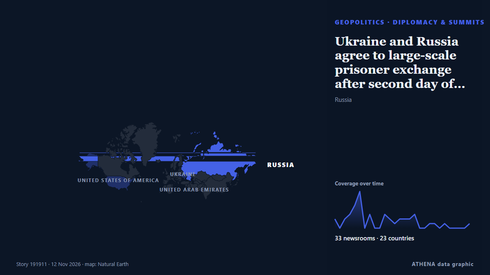

Ukraine and Russia agree to large-scale prisoner exchange after second day of talks

Thousands of Ukrainians are held in Russian captivity. από The Independent
Αναφέρθηκε ανεξάρτητα από 37 μέσα σε 24 χώρες από τις 11 Νοε, πρώτο το The National· η κάλυψη εξασθενεί. Το ATHENA εκτιμά τον κίνδυνο αυξημένο (4.8/10), κυρίως λόγω της σοβαρότητάς του και της εμβέλειάς του. Βεβαιότητα 90% (υψηλή): το επιβεβαιώνουν 37 ανεξάρτητα μέσα, μέση αξιοπιστία 76%. Μέσα ανά χώρα: Κίνα (5), Ηνωμένες Πολιτείες (4), Αζερμπαϊτζάν (3). Κάλυψη: 11 Νοε έως 12 Νοε, 27 ώρες.
Γιατί έχει σημασία: Η πλήρους κλίμακας εισβολή της Ρωσίας στην Ουκρανία ξεκίνησε τον Φεβρουάριο του 2022. Η σελίδα παρακολουθεί τις μάχες, τα πλήγματα σε υποδομές και τη διπλωματία γύρω από τον πόλεμο, όπως τα καλύπτουν μέσα από όλο τον κόσμο.
Τι άλλαξε: 7 νέες αναφορές από 7 μέσα στο 24ωρο έως 13 Νοε.
Πρώτη διατύπωση: UAE optimistic Russia-Ukraine talks will achieve positive breakthrough
Οι τίτλοι των ειδήσεων παρουσιάζονται στα αγγλικά, όπως δημοσιεύτηκαν.
Πώς να διαβάσετε αυτή τη σελίδα
- Τι διαβάζετε
- 37 μέσα σε 24 χώρες ανέφεραν αυτό το γεγονός. Οι αναφορές παρακάτω εμφανίζονται με τη σειρά που δημοσιεύτηκαν· κάθε τίτλος ανοίγει το αρχικό άρθρο. Το ATHENA δεν γράφει δικά του ρεπορτάζ.
- Η εκτίμησή μας
- Υπό παρακολούθηση — Οι αναφορές περιγράφουν ενέργεια ή απόφαση που δεν έχει ακόμη ληφθεί, ανάμεσα σε κράτη ή ένοπλες ομάδες. Το ATHENA παρακολουθεί τι θα συμβεί στη συνέχεια. Αναζητούμε τέσσερα είδη εξέλιξης: καμία περαιτέρω ενέργεια, μια ανοιχτή ενέργεια που κάποιος αναλαμβάνει, μια ενέργεια μέσω τρίτων ή χωρίς ανάληψη ευθύνης, και ένα ατύχημα ή μια παρεξήγηση. Δεν προβλέπουμε ποιο θα συμβεί.
- Πόσα στοιχεία υπάρχουν
- Ισχυρή Πολλά ανεξάρτητα μέσα σε πολλές χώρες περιγράφουν το ίδιο γεγονός.
Αφού αφαιρεθούν οι επαναλήψεις, τα άσχετα και τα παλιά στοιχεία, υπολογίζονται 29 από τις 40 αναφορές που παρατίθενται· το 100% των τίτλων αντιστοιχεί στο γεγονός.
- Τι δεν σημαίνει
- Το ATHENA μετρά πώς καλύπτεται ένα γεγονός, όχι αν είναι αληθές. Δεν είναι πρόβλεψη, κρίση για το ποιος έχει δίκιο ή συμβουλή.
- Τι θα την άλλαζε
- Αναφορές από άλλα ανεξάρτητα μέσα που δείχνουν διαφορετική εξέλιξη, ή σαφής επιβεβαίωση ή διάψευση από επίσημη πηγή.
Εκτίμηση R2 · ανανεώνεται με κάθε ενημέρωση της σελίδας. Το ATHENA δεν έχει δημοσιεύσει ακόμη ιστορικό επιδόσεων για αυτές τις εκτιμήσεις· όταν το κάνει, θα συνδέεται εδώ.
Με μια ματιά
Επιλέγεται, βαθμολογείται και γράφεται από τη δημοσιευμένη μεθοδολογία του ATHENA. Κανένας συντάκτης δεν παρεμβαίνει σε μεμονωμένα γεγονότα. Πώς παράγεται ›
| 11 Nov 09:13 UTC | 2 |
|---|---|
| 11 Nov 11:13 UTC | 5 |
| 11 Nov 13:13 UTC | 13 |
| 11 Nov 15:13 UTC | 3 |
| 11 Nov 17:13 UTC | 0 |
| 11 Nov 19:13 UTC | 5 |
| 11 Nov 21:13 UTC | 3 |
| 11 Nov 23:13 UTC | 4 |
| 12 Nov 01:13 UTC | 3 |
| 12 Nov 03:13 UTC | 1 |
| 12 Nov 05:13 UTC | 1 |
| 12 Nov 07:13 UTC | 1 |
| 12 Nov 09:13 UTC | 0 |
| 12 Nov 11:13 UTC | 2 |
| 12 Nov 13:13 UTC | 2 |
| 12 Nov 15:13 UTC | 0 |
| 12 Nov 17:13 UTC | 0 |
| 12 Nov 19:13 UTC | 0 |
| 12 Nov 21:13 UTC | 0 |
| 12 Nov 23:13 UTC | 1 |
| 13 Nov 01:13 UTC | 0 |
| 13 Nov 03:13 UTC | 1 |
| 13 Nov 05:13 UTC | 0 |
| 13 Nov 07:13 UTC | 1 |
| 11 Nov 11:36 UTC | 3.9 |
|---|---|
| 11 Nov 14:04 UTC | 2.4 |
| 11 Nov 14:12 UTC | 4.7 |
| 11 Nov 14:31 UTC | 6.5 |
| 11 Nov 18:09 UTC | 5.4 |
| 11 Nov 23:56 UTC | 5.5 |
| 12 Nov 05:50 UTC | 5.0 |
| 13 Nov 08:25 UTC | 4.8 |
Γιατί αυτοί οι αριθμοί
Σημασία
Κίνδυνος
Βεβαιότητα
Η κάλυψη — ποιος το ανέφερε και πότε
ο τίτλος όπως δημοσιεύτηκε · ανοίγει το πρωτότυπο- The National · Ηνωμένα Αραβικά ΕμιράταAbu Dhabi peace talks yield agreement on large-scale prisoner exchange between Russia and Ukraine
- The Moscow Times · ΡωσίαAbu Dhabi Talks End With Prisoner Exchange But No Peace Breakthrough
- APA (English) · ΑζερμπαϊτζάνLargest prisoner exchange between Russia and Ukraine could take place within two to three weeks
- Kurdistan24 (English) · ΙράκRussia And Ukraine Agree To Prisoner Swap In Abu Dhabi
- Politico Europe · ΒέλγιοUS to seek Putin’s ‘blessing’ for Europe to join Ukraine talks
- CBC News (alternative feed) · ΚαναδάςRussia-Ukraine talks mediated by U.S. end with news of 'good momentum,' large-scale prisoner swap
- Free Malaysia Today · ΜαλαισίαUS envoys to meet Putin after Ukraine talks in Abu Dhabi
- Al Jazeera English · ΚατάρRussia-Ukraine talks in Abu Dhabi end with prisoner exchange agreement
- The National Herald · Ηνωμένες ΠολιτείεςRussia and Ukraine Agree to a Large Prisoner Exchange as Talks Conclude With No Major Breakthrough
- NPR · Ηνωμένες ΠολιτείεςRussia and Ukraine agree to a prisoner exchange as talks end with no big breakthrough
- Gulf News · Ηνωμένα Αραβικά ΕμιράταRussia, Ukraine agree major prisoner swap at Abu Dhabi peace talks as US envoys head to meet Putin
- The Korea Times · Νότια ΚορέαRussia and Ukraine agree to large exchange of prisoners of war, officials at Abu Dhabi talks say
- TASS (English) · ΡωσίαLarge-scale prisoner swap, security: chief Russian negotiator speaks after Abu Dhabi
- China Daily — page reader · ΚίναRussian delegation says reached new prisoner exchange deal with Ukraine, talks will continue
- Türkiye Today · ΤουρκίαRussia, Ukraine agree on large-scale prisoner swap at Abu Dhabi talks
- China Daily — page reader · ΚίναRussia, Ukraine conclude Abu Dhabi talks with prisoner exchange as negotiations set to continue
- The Independent · Ηνωμένο ΒασίλειοUkraine and Russia agree to large-scale prisoner exchange after second day of talks
- Kyiv Independent · Ουκρανία'Large-scale' prisoner exchange agreed as 2nd day of Abu Dhabi talks concludes, Umerov says
- BelTA (English) — page reader · Λευκορωσία16:47 Large-scale prisoner swap and security in Europe: What came out of Abu Dhabi talks? Politics
- BelTA (English) — page reader · Λευκορωσία14:19 Medinsky: Russia, Ukraine agree on large-scale prisoner swap Politics
- AzerNews · ΑζερμπαϊτζάνRussia, Ukraine agree on large-scale prisoner exchange after US-mediated talks in Abu Dhabi
- Kyiv Post · ΟυκρανίαEXPLAINER: Why Ukraine, Russia, and US See Talks Differently
- Al Jazeera English · ΚατάρRussia-Ukraine talks in UAE secure major prisoner exchange deal
- Kyiv Independent · ΟυκρανίαUkraine war latest: 'Large-scale' prisoner exchange agreed as 2nd day of Abu Dhabi talks concludes, Umerov says
- Courthouse News · Ηνωμένες ΠολιτείεςRussia and Ukraine agree to a large prisoner exchange as talks end with no major breakthrough
- SBS News · ΑυστραλίαRussia and Ukraine exchange fire ahead of US envoys landing in Moscow for POW-swap talks
- Xinhua (English) — page reader · ΚίναUkraine, Russia agree to prepare for new prisoner exchange: Zelensky
- Global News (World) · ΚαναδάςRussia, Ukraine to exchange prisoners but talks end with no big breakthrough
- France 24 English · ΓαλλίαRussia and Ukraine agree to major prisoner swap as peace talks end
- The Independent · Ηνωμένο ΒασίλειοRussia and Ukraine agree to biggest prisoner swap yet at Abu Dhabi peace summit
- PBS NewsHour World · Ηνωμένες ΠολιτείεςRussia and Ukraine agree to a large prisoner exchange as talks end with no major breakthrough
- The Straits Times · ΣιγκαπούρηRussia, Ukraine reach deal on prisoner swop as US says lack of trust holds back talks
- DW English · ΓερμανίαUS, Russia, Ukraine wrap up talks with prisoner exchange agreement
- Novinite · ΒουλγαρίαUkraine, US and Russia Discuss Major Prisoner Swap in Abu Dhabi
- FBC News · ΦίτζιUkraine agree prisoner swap
- Ada Derana · Σρι ΛάνκαRussia, Ukraine reach deal on prisoner swap as US says lack of trust holds back talks
- China Daily — page reader · ΚίναUAE talks finalize prisoner swap
- The Independent · Ηνωμένο ΒασίλειοUkraine and Russia agree to large-scale prisoner exchange after second day of talks
- CGTN (World) · ΚίναRussia, Ukraine strike major prisoner swap deal in Abu Dhabi
- APA (English) · ΑζερμπαϊτζάνUS Special Envoy: Prisoner exchange between Moscow and Kyiv signals progress in negotiations